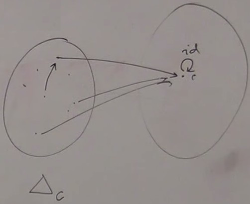

Motivation
Why are functors so important ? Functors are mapping between categories. For mathematicians, the important things are natural transformations, which are mapping between functors, and functors is an important step towards the definition of natural transformation.There are things in category theory that formalize thing that we wouldn't have even thought they were formalizable.
For example universal construction is about being able to define what it means to be a perfect embodiement of an ideal. How do we define a product ? Among all the possibilities we pick the best one, the ideal. If it exists, it is unique up to an isomorphism. The two different types of universal constructions we saw, for product and coproduct, define slightly different ways of saying what is more ideal than other thing ; one of them is perfect. For product, it's property is that there is a morphism coming from any other candidate, which means that any other candidate can be distilled to this ideal of a product. With coproduct we sort of did the opposite : here is the ideal coproduct, and any other candidate has in it an image of it because there is a morphism from this perfect coproduct down to any other candidate ; this morphism finds the perfection inside this imperfect thing.
Mathematically speaking, functors is a rather simple idea, it's just a mapping from a category to an other.
With product and coproduct, we used a loose vocabulary, saying we are looking for a pattern. For instance a single object (for terminal and initial objects), or an object and two arrows (for product and coproduct) and we try to match this pattern in our big category.
Pattern matching is so obvious. That's what we do from the moment we wake up untill we go to sleep, and maybe in our dreams ; it's like the most important thing in understanding the world. We build a model of the world and match it to reality, we try to find patterns everywhere and recognize them.
Category theory tells us how to formalize pattern recognition. It says that to recognize a pattern into a category you have to define what you mean by the pattern. A pattern must be some kind of structure. And then you have to map this pattern into this category, in such a way you recognize the pattern, which means that you have to preserve its structure.
So what does it mean to have structure ? Category is a definition of structure ; category is structure abstracted to bare essential.
So to recognize a structure inside a category you have to define your pattern as a category. If it's a simple pattern, it will be a tiny category.
So being able to recagnize a category inside an other category is the definition of pattern recognition. We'll come back to that when we define a more general thing called limits and colimits, and we'll see that product and coproduct are just examples of limits and colimits.
This is what's important : being able to define mapping between categories. We can think of one category as being the pattern or the model and we map it into an other category and we recognize a match of this model or embed this model into an other category.
Definition
First we must be able to match objects. For simplicity, let's just consider small categories, where the objects just form a set. So mapping objects is just a mapping of sets, a function. Things we know about functions, like collapse things (non injective) or not cover the whole codomain (non surjective), just translate to that part of the definition of a functor.Functions are primitive, trivial : what is really interesting in mathematics and in the world in general is mapping that preserve structure. And functions are just mappings between sets, and sets have no structure.
Categories embodies structure, but is there a category that embodies the lack of structure ? How to represent a set as a category ? It's a category without arrows, except identities (if we have arrows, we have structure, because arrows compose). It is called a discrete category (we talk about a single set, not the
Set category). Any category that is not discrete has structure.
To preserve structure, our mapping must also map arrows. Let's call
F the functor beween categories C and D.
In category
C, the arrows between two objects a and b form a set, the hom-set C(a,b) which is mapped to hom-set D(Fa, Fb). A mapping between hom-sets is a mapping between sets, which is again a function. We must then define a function for each pair of objects.
So we have a potentially huge number of functions : one function to map the objects, and one function per hom-set.
And to preserve structure, we must preserve composition and have :
F(g o f) = Fg o Ff ; not every mapping will fit.
We must also preserve identity and have :
F Ida = IdFa. This is part of the mapping between hom-sets C(a, a) and D(Fa, Fa) ; not every mapping will fit.
So a functor is a mapping betwwen objects and morphisms, that preserve composition and identity.
It formalizes the idea of "What does it mean to preserve a structure ?".
Let's also notice that
C and D can be the same category. In this case F is called an Endofunctor.
Properties
Whenever objects are connected in the source category, they are connected in the target category.It is possibe to have a bunch of arrows between
a and b and have only one arrow between Fa and Fb ; the mapping is a function, it can squish things together.
It doesn't mean that every morphism between
Fa and Fb will have a corresponding morphism between a and b, the mapping doesn't have to be surjective.
So we can drop information when we go from a functor to an other, but important : we never destroy connection ; we can squiz it but not suppress it.
This reminds us topology and continuous transformations where we never break connection (there exists continuous functors that have a more precise definition).
If a functor does not shrink arrows, if the mappings of hom-sets are injective, then the functor is called safe, or faithful.
If the mappings of hom-sets are surjective, then the functor is ful.
Notice that this concerns only hom-sets, not objects. A functor can collapse objects (non injective on objects) and still be faithful. Or it can map the source category to a subset of the destination category and still be ful.
The most "fidel" functors are ful and faithful (fully faithful), hom-set mappings are surjective and injective, isomorphic.
Functor on one object category
This category is called1. This will map in one object of the destination category.
There are many such mappings as there are many objects to pick in the destination category. A functor from a single object category is equivalent to picking an object in the destination category. It's like with functions, from the terminal object (singleton set) into any other set to pick an element of the set.
The constant functor
The constant functor is a functor that collapses all objects of the source category to one single objectc of the destination category.

All the arrows of the source category are mapped to identity.
c is a kind of black hole.
There are many constant functors depending on which object we pick in the destination category.
This functor is noted
Δc.
The object c totally defines the functor.
In programming
Most common functors found in programming are endofunctors in the category of types and functions.In Haskell, endofunctors are just called functors ; it's sort of assumed that there is only one category.
So what is a "functor" (endofunctor) ? Objects become types and morphisms become functions.
It first needs to be a mapping of types ; we consider a total mapping ; every type must be mapped.
In Haskell we call it type constructor ; in other languages, it's called parametrized data type, or template, or generic type. It's the notion of a whole family of types parametrized by other types.
And it also has to map morphisms (here functions).
Example : Maybe
For every typea, we are defining a new type Maybe a.
data Maybe a
a is a type ; can be integer, boolean...
The functor
Maybe maps type a to type Maybe a ; for example Int is mapped to Maybe Int.
In Haskell, the definition is :
data Maybe a = Nothing
| Just a
It's a coproduct of unit and identity.
To be a functor, we need to define mapping of functions. A function
f between two types a and b must be mapped to a function beween Maybe a and Maybe b.
In Haskell, this function,
Maybe f is noted fmap f, it has the same name for all functors.
For the
Maybe functor, the definition of fmap is :
fmap :: (a → b) → (Maybe a → Maybe b)It takes in argument a function from type
a to type b and returns a function from type Maybe a to Maybe b.
In Haskell we don't need to specify for which
fmap we mean but in mathematics we would say fmapMaybe.
fmap is defined differently for every functor. In Haskell we have a kind of polymorphism.
Implementation
fmap takes a function f from a to b and produces a function that goes from Maybe a to Maybe b.
This function takes a
Maybe a.
A
Maybe a can be either Nothing or Just, so we need to consider two cases :
-
fmap f Nothing = Nothing
The return type must be of typeMaybe b.
But does it really have to beNothing(appart fromBottom) ?
We could say "it'sNothingunless the typeais integer".
We want to use polymorphic functions in a language. The language Haskell tells us that functions should be parametrically polymorphic. So if we say "we are in systemFwhich is parametrically polymorphic, then we have only certain ways to construct polymorphic functions using a single formula" thenNothingis the only answer. But there is something called ad'hoc polymorphism which permits to say "for everything except for integer do this and for integer do something else". It's a legitimate kind of polymorphism except that we don't want to use it here.
It's important to be aware that when we program we are straying from mathematics, we are imposing a stronger condition than being a functor.
Once we impose that condition of being parametrically polymorphic, we are making it much more restrictive. So it's so much more restrictive that it leads to so-called theorm for free, something that says "because in Haskell we can only implement polymorphic functions of a limited kind (a certain type of polymorphism) then it imposes additional conditions on what we can do". -
fmap f Just x = Just(f x)
[ We could say it'sNothing. Homework : if we putNothing, will it be a good functor ? ]
This is a typical way of implementing a functor. A functor onausually has something of typeainside and can just apply this function to the insides of the functor.
We now have the definition of mappings of the functor :
- Is it mapping identity to identity ?
-
Does it preserve composition ?
Response after a break !
data Maybe a = Nothing
| Just a
defines object mapping.
fmap f Nothing = Nothing fmap f Just x = Just(f x)defines morphism mapping. But to know if we have a functor, we must know :